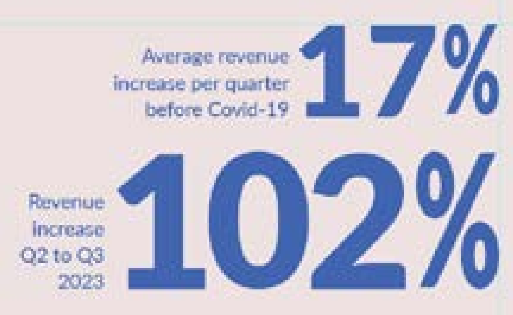

My target audience is individuals who switched to remote work and using Zoom, or other video-calling software, during Covid-19. This specifies a demographic of employed people aged about 18 to 65 years. Given as these people are working adults, I can expect them to have a basic understanding of charts and graphs. This means that while I cannot make the charts complicated, they do not have to be overly simplified (eg. showing more than one dataset on the same chart using dual-axes will be understandable given visual clues such as color to help comprehension).
Taking into consideration the purpose of the infographic (to inform about the pandemic being the major reason for Zoom’s popularity), the viewers do not need to see the specific numbers displayed on each data point on the graphs, just the general difference between points which can be seen using the y-axis. This is different than if the infographic was made for statisticians, who would need to be able to know the precise value of each data point. In order to accentuate data points I thought were important to viewers’ understanding, I took the values and displayed the numbers large outside the graph itself.
Non Communicable Diseases Risk Factors
My first topic focused on the different risk factors for non-communicable diseases and which risk factors were most prevalent in Canada’s population over time. Using the World Health Organization Databank I found a list of risk factors and various datasets for the prevalence of each one in Canada’s population. These risk factors are:
- Blood Pressure
- Cholesterol
- Harmful use of alcohol
- Insufficient physical activity
- Obesity
- Tobacco use
However after plotting all the datasets into different graphs I realized that because the data was measured in different units (average mL per week of alcohol, average time per day spent sedentary), I could not compare the datasets.
Death by Non Communicable Diseases by Year
My second topic focused on the number of deaths in Canada each year that can be attributed to various non-communicable diseases. The diseases WHO had together in their dataset were malignant neoplasms (tumors), respiratory disease, cardiovascular disease, and Diabetes Mellitus. I plotted the dataset in Tableau, making a separate graph for each disease, and found that respiratory diseases and malignant neoplasms caused far more deaths than cardiovascular disease and Diabetes Mellitus.
Death by Non-Communicable Disease by Year and by Gender
In plotting the datasets for th deaths by non-communicable diseases I saw that I could sort the data by gender. In order to explore depth in my topic, I took a close look at the data through the lens of male deaths versus female deaths. I found that in 3 of the 4 diseases males had higher death rates than females, with the exception being cardiovascular disease in which female deaths were higher or equal per year.
Why is the male death rate higher?
From this analysis my idea to display the fact that male death rates for non-communicable diseases are generally higher than for females an to explore some of the reasons why this might be.
Some quick research gave me many reasons to explore and lots more ideas for datasets I could try to find. In general, men live shorter lives than women due to:
- Taking bigger risks
- Having jobs that are more physically demanding
- Being larger than women
- Lacking social connection
- Avoiding doctors
I thought that each of these reasons would make an interesting dataset comparing males versus females to further illustrate my topic.
Why do more females die of cardiovascular disease?
The analysis of the deaths by non-communicable disease by year and gender also inspired a topic idea for exploring why females die more than males from cardiovascular diseases. In researching I learned that estrogen plays a role in protecting the heart, and once women enter menopause their estrogen levels drop, making cardiovascular disease a higher risk.
Zoom vs Covid-19
I was not happy enough with any of the narratives I could do with the non-communicable diseases data, so I moved on. Inspired by a slide in the week 9 presentation which showed an graph of the popularity of landline phones versus cell-phones over time, I began to think about what technology has become more popular over time, and landed on Zoom. I knew that I had never heard of Zoom before the pandemic, then all of a sudden it was everywhere; I was using it for every class and my parents were using it for most work meetings. I wanted to see if that was the case for everyone for just my specific situation. It turned out to be the case for everyone. Statistics from MacroTrends. net shows that between the first and second quarter of 2020 (right when the pandemic was declared,) Zoom’s revenue almost doubled. To add another layer to the topic, I decided to do more research into the human behavior that caused this, and found that the data curve for the number of people who died from Covid-19 very much matched the spike in Zoom’s revenue. I had decided on my topic.
I chose dual-axis for most of the graphs because with both sets of data on the same axis the Sum of Covid deaths was almost imperceptible due to how much smaller the numbers are than the Sum of Zoom Revenue.
Graph 1: Dual-Axis Line Graph
This graph visualizes both datasets with lines. I believe this type of graph shows the changes over time very well and allows the viewer to really see the similarities in the curves of the data. However, with both graphs being line, I thought it made it a bit unclear that the datasets were of two different units and meant to be read on two separate axes.
Graph 2: Dual-Axis Column Graph
This graph visualizes both datasets with columns. Similar to the Dual Axis Line Graph this format also does a good job of showing the similarities in the data curves. However, just as Graph 1, it is also slightly unclear that the datasets being compared are two different units and axes. Additionally, the columns themselves are displayed in front/behind of each other, making it seem like a stacked column chart. While this could be fixed in Illustrator, I believe the staggering of the columns would make the curve of the datasets look less similar, working against the narrative of the dataset.
Graph 3: Dual-Axis Area Graph
This graph visualizes both datasets with solid coloured areas. Same as the first two graphs, this format also showcases the similarity of the datasets curves well. However, I found that displaying the changes as a solid area makes it slightly harder to understand that the graph shows data over time; versus the Graph 2 in which the blocks of time are clearly distinguished from each other. Also similar to Graph 2, displaying the area in front/behind each other gives the idea that the chart is a stacked area, which if read as such would dramatically change the understanding.
Graph 4: Two Filled Radar Graphs
This graph visualizes the data sets on two separate filled radar graphs. Despite knowing that radar graphs are not meant to display data over time. I very quickly realized that this type of graph would not work at all as trying to view the data points changing on a series of circular axes made it far too difficult to pick out any pattern in the data at all.
Graph 5: Dual-Axis Line and Column Graph
This graph visualizes data using a dual-axis graph with both line and columns. I found this combination of line and columns to solve the issues present in the previous types of graphs. Because the two variables are represented visually differently it is easier to see that they are not in fact the same unit and each belong to a different axis. Allowing the columns to be visually separated by space in between them, unlike the area graph, allows the the Quarters they represent to be easily distinguished. This paired with the line graphs ability to clearly show data changes over time worked best to convey my narrative.
Zoom Revenue Rate of Change Per Quarter
Despite the dual-axis column and line graph clearly showing the connection between the spike in Zoom revenue and deaths from Covid-19, I felt that it was not clear enough just how big of a change Zoom went through.
In order to make this more apparent, I made a table calculating the rate of change between quarters, and found that those numbers were much more shocking and effective. I averaged out the rate of change before Covid-19 and found it on average to be 17% increase, versus the 102% increase right when Covid-19 began.
Next I formatted the table into some different types of charts in order to see which type conveyed the data most effectively.
Line Graph vs Column Graph
Looking at the two graphs side by side I had a hard time figuring out which type was more effective in displaying the sudden increase in revenue.
While the line chart is certainly shocking with the tall, sharp point, I felt that it was harder to tell that the large spike incased two quarters instead of just one. I was also concerned that because in my main graph the Covid Deaths is displayed through line and the Zoom Revenue is displayed through columns that it might be confusing to show the same Zoom data in a line format.
I decided on the column chart, even though I thought it was slightly less effective in its shock factor.
Zoom Business Customers vs Percentage of Workforce Remote
Next was creating a chart of supporting data for my narrative. I used statistics from StatsCanada and searchlogistics.com to make a table comparing the amount of annual business customers Zoom has vs the percentage of the workforce that worked remotely per quarter.
I began by plotting the two datasets on a dual-axis line chart, but found that despite the numbers in the table looking like they should be similar, the lines were very different. After checking my numbers to ensure they were correct, I tried the same technique that I did the Zoom Revenue Rate of Change Per Quarter graph and calculated the rate of change per quarter for each data set. This time the lines looked much more comparable.
Line Graph vs Line and Column Graph
In deciding what type of graph to use for this supporting data I was originally going to use the same scheme as my main chart: columns for Zoom and line for Covid-19. However in formatting the data I found a few issues. Single-Axis Column and Line graph Dual-Axis Column and Line graph Dual-Axis Line graph.
Comparing the Data
The first issue I found with having columns and line in this graph was that it downplayed the connection between the datasets. In the line graph I found it easier to see that both datasets spiked at the exact same time, versus the line and column in which the width of the bar offsets the timing.
Dual versus Single Axis
In order to try and fix this I tried a dual-axis line and column. While this did make the connection in timing much more clear, changing the height of the tallest column to almost the exact same as the spiked line point, it also moved the negative part of the y-axis up as the Zoom data does not use it. This made it look like the Zoom columns started below the 0% line.
I ended up choosing a single-axis line graph, as I believe it shows the timing best and does not create any visual confusion with a below-0 dual-axis.
Horizontal Layouts
I began with horizontal layouts as my graphs were all wider than they were taller, and I believed they might fit better. I experimented with different locations for my title and main graph, then placed the supporting graphs and paragraphs around them. However I quickly found that I was not happy with any of the layouts. They looked too squished and messy (also probably in part due to the large sizing of all the elements), and I did not feel like there was a clear direction for the eye to follow or hierarchy of which information was most important.

Vertical Layouts
I immediately found that I preferred a vertical layout. I felt that i provided a clear direction of where to start, which in turn would allow me to place my content in the order I wanted it to be viewed. I experimented a bit with the the placement of the title once again, and decided that I liked having the title large with 1 work per line, leaving the other half of the top of the page open for a small paragraph introducing the data. I also decided to make my main graph take up the entire width of the page to make it the largest element as it is the most important.
Cleaning it Up
Once I had decided on a layout I created another art board and just mapped out the solid shapes of where I wanted each element to be. This way I could ensure that my spacing was correct and format my graphs to be the correct dimensions.

Main Paragraph
I wanted to include a small amount of text in the infographic to provide some context for the data. I researched Zoom then wrote a small paragraph about its history and and rise to fame during the pandemic.
I was given feedback to make my paragraph a bit shorter, as the longer the paragraph is the less likely people are to read the whole thing.
Iterations of Main Paragraph
Changes in red
Founded in 2011, Zoom displayed expected growth for a video-call company as video-calling became more and more popular over the years. However, in 2020 when covid-19 hit the percentage of workers who worked remotely very quickly doubled. This created a sudden demand for the ability to take meetings that would normally happen in-person in the workplace and make them digital. This is where Zoom stepped in. Already gaining popularity since the company became open to the stock market in April 2019, Zoom was at just the right place and the right time to be widely adopted as a new necessity for any company wanting to continue communication during the pandemic.
Founded in 2011, Zoom expected growth as video-calling became more and more popular over the years. However, in 2020 during the span of two months when covid-19 hit the number of people working remotely doubled. This created a sudden demand for the ability to take meetings that would normally happen in-person in the workplace and make them digital. This is where Zoom stepped in. Already gaining popularity in the stock market in 2019, Zoom was at just the right place at the right time to be widely adopted as a new necessity for any company wanting to continue communication during the pandemic.
Founded in 2011, Zoom grew slowly but steadily as video-calling became more popular. However, in the span of two months in 2020 after Covid-19 was declared a pandemic, the number of people working remotely doubled, hereby creating a sudden demand for the ability to communicate via video-call.
This is where Zoom stepped in. Already gaining popularity in the stock market in 2019, Zoom was at just the right place at the right time to be widely adopted as a new necessity for any company wanting to continue communication during the pandemic.
In order to have more control customizing elements of the graphs I traced over my graphs in Illustrator, sizing each one to the dimensions of the box it will be placed in on my layout map and making sure to leave room for titles, axes, and legends. I included only the columns, lines, and horizontal lines as I had not chosen a typeface yet so would add the text and numbers in later.
This stage allowed me to have more specific control over line width for both the data line and the horizontal lines, as well as the space between columns.
I chose 8px for the width of the data line. I found that anything smaller was hard to see, but anything much larger was distracting from the columns.
Given as Zoom has a recognizable logo with a distinct color, I decided to base my color palette off of the Zoom blue. An issue I ran into with this is that the Zoom blue is extremely saturated, which made it hard to pair any other colors. To combat this, I turned the saturation down and darkened the color a little. So now while the blue was not exact, it was functional in the piece while still allowing the logo to be recognizable. Next I began pairing other colors to try and find my palette. In order to get a better idea of what the colors would actually look like on the piece, I tested my palette on the simple trace of the main graph.
Orange and Blue
The first palette I tried working with was my modified blue and a complimentary orange to the original blue. While I found this palette to work visually, I didn’t feel like it fit with my narrative. The orange was too cheerful and bright, reminding me of summer instead of Covid-19 and statistics. To combat this I tried changing the brightness and saturation of the cream orange background to be more dull, but I still found the colors to not fit with what I was looking for.
Red and Blue
While I was happy with my two modified light and dark blues, I needed the orange to change. Staying within the same area of the color spectrum I changed to red; a more suitable color to display statistics about deaths. I immediately thought this worked better. The red could be clearly seen against the lighter blue and the mood of the piece was less cheerful.
With my palette chosen, I experimented with having a dark background instead of a light, but found it to be too distracting and take away from the graphs themselves.
In order to get a better idea of how the typeface would look on the piece as a whole I tested different typefaces on the top section of the infographic with contained all the different hierarchy levels of text I would be using: main title, subtitle, and paragraph text.
I began by testing a simple Serif and Sans Serif. I found of the three broad categories, I liked the Serif and Sans Serif best. The Serif I felt was reminiscent of newspapers and provided an air of truth and reliability, like the information shown is factual. I liked the Sans Serif because it felt like it fit with the graphs and color palette I had chosen. The color palette is a bit more modern-day than would normally be seen in a newspaper, and the SansSerif fit with the geometric nature of the graphs.
Deciding to explore Sans Serif further, I chose another typeface and compared different font weights.

Zoom Typeface
Still not completely happy with any Sans Serifs, I had the idea to look online and see what type face Zoom uses, that way the logo would fit in with the text on the infographic. On the Zoom Developer Forums I found that Zoom uses the Google Font Lato, which is also available through Adobe. In order to check, I typed the word “zoom” in Lato and laid it over the Zoom logo, and found that it is in fact lato, just with some stylistically chosen rounded corners on characters.
Lato Bold
abcdefghijklmnopqrstuvwxyz
ABCDEFGHIJKLMNOPQRSTUVWXYZ
0123456789
I tested Lato on my work and found that I liked it. However, I still felt that the title looked too plain, especially while the Zoom logo was stylized. To fix this, I converted the title text to outlines and rounded some of the corners just as in the Zoom logo. I found that this added just enough style to add interest to the piece but not be distracting from the work.
Dark Blue and Light Blue
Because I made the color of my columns the light blue so that the red could be seen better, I debated even including the darker blue. However, I found that only having the light blue made the piece seem too washed-out and the paragraph text too hard to read. I also tried changing all the blue to dark blue, getting rid of the light blue altogether, and combating the issue of the red not being able to be seen well by lightening it to stand out against the dark more. However I found this to make the red look too pink and change the overall mood of the graphs.
I ended up choosing the have the columns, axis titles, and x-axis labels in the lighter blue with titles and paragraph text in the darker blue. I considered making the axis-titles and x-axis labels in the darker blue so they could be seen better, but I thought it made them stand out too much compared to the data, and also added a layer of disconnect between them and the graphs. Having all related elements of the graphs the same color helps to distinguish that they belong together.
Distinguishing Dual-Axes with Colour
In order to help viewers distinguish which axis belonged to which dataset on the graph, the axis titles are in the same color as the dataset they represent. Red for Covid-19 deaths, and blue for Zoom revenue. This was a tip given to me during feedback.
Multi-colour Graph Titles
As another way to help users distinguish the datasets on the main graph I tried changing the colors of the world in the title to match their respective datasets. However I found that this made the piece look too messy and disorganized, as well as added unnecessary confusion.
Shortening Y-Axis Markers
Another tip given to me during in-class feedback was to remove all the trailing zeroes of the numbers on the y-axis. The numbers in the main graph are quite large, millions and billions, so displaying the full numbers just took up space and was confusing to viewers who had to count so many zeroes to figure out what numbers they were seeing. To fix this, I got rid of all the zeroes and added a subtitle to the axis titles that says “*in millions”. This way, the viewers have less mental work to do to determine what numbers are represented on the graph.
Sectioning Off Years
Another detail I added to reduce the mental workload of views is ranges below the x-axis that section off the years. Without this detail, the viewer would have to look at the subtitle to determine what date the graph begins and count quarters from there to determine what year any specific data point is in.
Styling Graph Titles
Given as the main title of the piece is stylized to match the Zoom logo, I also tried stylizing the titles of the graphs. However, as soon as I had finished rounding the corners on the title of the main graph and zoomed out to look at the piece as a whole, I realized that stylizing the graph titles was distracting and took away from the data itself; so I chose to keep the graph titles as they were in Lato Black.
Paragraph Alignment
For the top section of the infographic which contained the title, subtitle, and introductory paragraph I wanted the elements to be cleanly sectioned off, without jagged lines that ran into each other. With the title already fairly rectangular with 1 word per line, that left deciding the right way to align the introductory paragraph. I found that justifying the paragraph worked best as it gave it the most rectangular shape with clean edges, versus left or right aligned which only created a clean edge on one side. The only issue I ran into with justifying the paragraph was that I had to tinker with the wording of the paragraph so there was not too much space between words on some lines.
Percentage Visual
Deciding how the large numbered percentage visual was going to be formatted took a lot of tinkering and iterations.
I first tried to format it the same way I had planned to in my chosen layout: with one large percent symbol and two numbers of varying sizes, the more important number being largest. However, I realized that I had used a different font in my layout planning, and the font I was using now, Lato, was not as tall, so did not take up the space I needed it to. I tried stretching the numbers (going in and adjusting the anchor points to keep the letters as un-stretched looking as possible,) but despite taking up the space I wanted them to they now did not fit in with the rest of the text in the piece and were too distracting.
Next I tried moving the caption for the larger number to be below it and expanding the number to the height I wanted it now that it could take up the previous caption space. While this technically worked and got the numbers to the right sizes, I did not like that one caption was beside its number and the other below.
Next I tried getting rid of the concept of the one big percent symbol and moving the captions to the space it would’ve been before. I ran into the same issue as before, however, in which the number that is supposed to be larger could not be expanded to its desired height and still fit within the width constraints.
Next I tried compressing the percent symbols to be thinner in order to give the numbers more horizontal room. This, along with being more lenient about the amount of vertical space between the top and bottom number, worked well.
Not happy with the way the numbers were misaligned in the previous iteration, I tried aligning them both left in order to create more of clean left edge. I found I liked this much better, and chose it for the final piece.
At the very end of my process I scaled down the entire infographic to 94% and re-spaced the sections in order to make the whole thing less squished and messy. I found this allowed me to add more vertical spacing between the sections allowing for them to be distinguished from each other more easily.
Canzanese, Ray. “Remote Work Increasing Exponentially due to COVID-19.” Netskope, 16 Mar. 2020, www.netskope.com/blog/remote-work-increasing-exponentially-due-to-covid-19.
Coate, Patrick. “Remote Work Before, During, and after the Pandemic.” Www.ncci.com, 25 Jan. 2021, www.ncci.com/QEB_Q4_2020_RemoteWork
Curry, David. “Microsoft Teams Revenue and Usage Statistics (2020).” Business of Apps, 25 Aug. 2020, www.businessofapps.com/data/microsoft-teams-statistics/.
Dean, Brian. “Zoom User Stats: How Many People Use Zoom in 2021?” Backlinko, 10 Mar. 2021, backlinko.com/zoom-users.
Dziedzic, Łukasz. Lato, 2010, fonts.google.com/specimen/Lato.
Flynn, Jack. “25 Trending Remote Work Statistics [2023]: Facts, Trends, and Projections.” Zippia, 13 June 2023, www.zippia.com/#Remote_Work_Trends_and_Predictions.
Government of Canada, Statistics Canada. “Working from Home during the COVID-19 Pandemic: How Rates in Canada and the United States Compare.” Www150.Statcan.gc.ca, 24 Aug. 2022, www150.statcan.gc.ca/n1/pub/36-28-0001/2022008/article/00001-eng.htm.
“Working Most Hours from Home: New Estimates for January to April 2022.” Www150.Statcan.gc.ca, 17 July 2023, www150.statcan.gc.ca/n1/pub/11f0019m/11f0019m2023006-eng.htm.
Macro Trends. “Zoom Video Communications Revenue 2019-2023 | ZM.” Www.macrotrends.net, www.macrotrends.net/zoom-video-communications.
Mayo, Alex. “Whats Is the Default Font Style of Zoom?” Zoom Developer Forum, 24 Apr. 2021, devforum.zoom.us/whats-is-the-default-font-style-of-zoom.
National Heart Lung and Blood Institute. “Coronary Heart Disease - Women and Heart Disease | NHLBI, NIH.” Www.nhlbi.nih.gov, 8 June 2023, www.nhlbi.nih.gov/health/coronary-heart-disease/women.
Search Logistics. “Zoom User Statistics: How Many People Use Zoom in 2023?” Www.searchlogistics.com, 12 Nov. 2021, www.searchlogistics.com/zoom-user-statistics.
Statistica. “Coronavirus (COVID-19) Cumulative Cases by Day Worldwide 2020.” Statista, June 2023, www.statista.com/cumulative-coronavirus-covid19-cases-number-worldwide-by-day/.
The Punctuation Guide. “En Dash | the Punctuation Guide.” Thepunctuationguide.com, TPG, 2010, www.thepunctuationguide.com/en-dash.html.
Tsao, Connie W., et al. “Heart Disease and Stroke Statistics—2022 Update: A Report from the American Heart Association.” Circulation, vol. 145, no. 8, 26 Jan. 2022, www.ahajournals.org/doi/10.1161/CIR.0000000000001052, https://doi.org/10.1161/cir.0000000000001052.
Wikipedia Contributors. “Zoom Video Communications.” Wikipedia, Wikimedia Foundation, 19 Oct. 2019, en.wikipedia.org/Zoom_Video_Communications.
World Health Organization. “Age-Standardized Estimates of Current Tobacco Use, Tobacco Smoking and Cigarette Smoking (Tobacco Control: Monitor).” Www.who.int, www.who.int.
“Alcohol, Recorded per Capita (15+) Consumption (in Litres of Pure Alcohol).” Www.who.int, www.who.int/data/alcohol-recorded-per-capita.
“Cardiovascular Diseases.” Www.who.int, www.who.int/cardiovascular-diseases.
“Insufficiently Active (Crude Estimate).” Www.who.int, www.who.int/data/insufficiently-active.
“Mean BMI (Kg/M2) (Age-Standardized Estimate).” Www.who.int, www.who.int/data/mean-bmi.
“Mean Non-HDL Cholesterol (Age-Standardized Estimate).” Www.who.int, www.who.int/data/chol_05.
“Noncommunicable Diseases: Risk Factors.” Www.who.int, www.who.int/data/noncommunicable-diseases-risk-factors.
“Number of Deaths Attributed to Non-Communicable Diseases, by Type of Disease and Sex.” Www.who.int, www.who.int/data/number-of-deaths-attributed-to-non-communicable-diseases-by-type-of-disease-and-sex.
“Prevalence of Hypertension among Adults Aged 30-79 Years.” Www.who.int, www.who.int/data/prevalence-of-hypertension-among-adults-aged-30-79-years.
Worldometer. “Coronavirus Graphs: Worldwide Cases and Deaths - Worldometer.” Www.worldometers.info, 2021, www.worldometers.info/coronavirus/worldwide-graphs/.